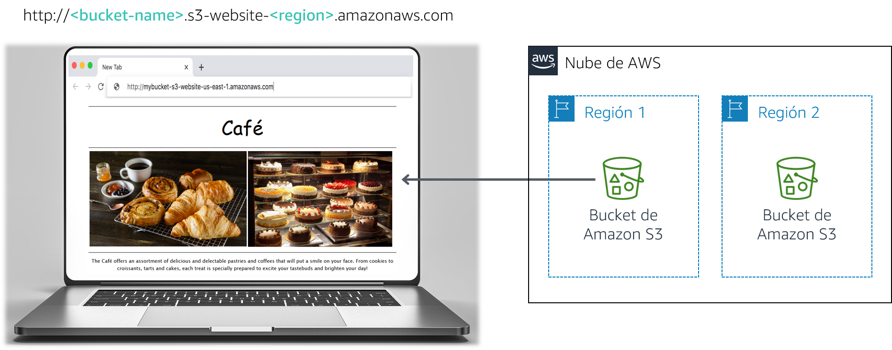

Frank y Martha son un equipo de esposos que poseen y administran una cafetería pequeña, que vende postres y café. Su hija, Sofía, y otro empleado, Nikhil, que es un estudiante de secundaria, también trabajan en la cafetería. La cafetería tiene un solo local en una ciudad grande.
Actualmente, la cafetería no tiene una estrategia de marketing. En su mayoría, ganan nuevos clientes cuando alguien pasa por el frente, ve la cafetería y decide probar. La cafetería tiene fama de tener postres y cafés de buena calidad, pero su reputación se limita a las personas que la han visitado o que han oído hablar de ellos por parte de sus clientes.
Sofía sugiere a Frank y Martha que deberían hacerse más conocidos en la comunidad sobre lo que la cafetería tiene para ofrecer. La cafetería aún no tiene presencia en la web y actualmente no utiliza ningún servicio de informática en la nube. Sin embargo, esa situación está a punto de cambiar.
En este laboratorio, utiliza Amazon Simple Storage Service (Amazon S3) para crear un sitio web estático e implementar prácticas recomendadas de arquitectura con el fin de proteger y administrar sus datos.
Después de completar este laboratorio, debería ser capaz de lo siguiente:

Nota: En este laboratorio de desafíos encontrará algunas tareas que no incluyen instrucciones paso a paso. Debe darse cuenta sin ayuda de cómo completar las tareas.
El tiempo estimado para completar este laboratorio es de 60 minutos.
En este entorno de laboratorio, el acceso a los servicios y las acciones de los servicios de AWS puede restringirse a los que se necesiten para cumplir las instrucciones del laboratorio. Es posible que se produzcan errores si intenta acceder a otros servicios o hacer acciones que no sean las que se describen en este laboratorio.
En la parte superior de estas instrucciones, elija Start Lab (Iniciar laboratorio) y comience a trabajar en él.
Se abrirá el panel Start Lab (Iniciar laboratorio), donde se muestra el estado del laboratorio.
Sugerencia: Si necesita más tiempo para completar el laboratorio, vuelva a hacer clic en el botón Start Lab (Iniciar laboratorio) para reiniciar el temporizador del entorno.
Espere hasta que aparezca el mensaje Lab status: ready (Estado del laboratorio: listo) y, a continuación, haga clic en X para cerrar el panel Start Lab (Iniciar laboratorio).
En la parte superior de estas instrucciones, elija AWS.
Esto abrirá la consola de administración de AWS en una nueva pestaña del navegador y el sistema iniciará su sesión de forma automática.
Sugerencia: Si no se abre una nueva pestaña del navegador, por lo general habrá un aviso o un icono en la parte superior con un mensaje que indicará que el navegador impide que el sitio abra ventanas emergentes. Haga clic en el aviso o el icono y elija Allow pop ups (Permitir ventanas emergentes).
Ubique la pestaña de la consola de administración de AWS de modo que aparezca junto con estas instrucciones. Idealmente, debería poder ver ambas pestañas del navegador al mismo tiempo para que pueda seguir los pasos del laboratorio fácilmente.
Sofía le mencionó a Nikhil que le gustaría que la cafetería tuviera un sitio web que mostrara las ofertas visualmente y que proporcionara a los clientes detalles del negocio, como la ubicación de la tienda, el horario de atención y el número de teléfono.
Nikhil está contento de que le hayan pedido crear el primer sitio web para la cafetería.
Para este primer desafío, asumirá el papel de Nikhil y utilizará Amazon S3 para crear un sitio web básico para la cafetería.
En esta tarea, extraerá los archivos que necesita para crear el sitio web estático.
En esta tarea, creará un bucket de Amazon S3 y lo configurará para alojar su sitio web estático.
Abra la consola de Amazon S3.
Cree un bucket para alojar su sitio web estático.
Habilite el alojamiento de sitios web estáticos en su bucket.
En esta tarea, cargará los archivos estáticos en el bucket de S3.
Las respuestas se registrarán cuando haga clic en el botón azul Submit (Enviar) que está al final del laboratorio.
Acceda a las preguntas de este laboratorio.
En la página que cargó, responda la primera pregunta:
Nota: Deje abierta la página web con las preguntas en la pestaña de su navegador. Volverá a ella más adelante en este laboratorio.
Frank comparte que planea crear muchos tipos nuevos de pasteles para la cafetería. Usted se da cuenta que deberá cargar una imagen para cada nuevo postre que él cree y habilitar el acceso público en ese objeto. Este proceso no es para hacerlo manualmente. Entonces, decide crear una política de bucket que automáticamente hace que los objetos sean públicos cuando los carga a la carpeta.
Cree una política de bucket que conceda permiso de solo lectura a usuarios públicos anónimos mediante el editor de Políticas de bucket.
Pista: Si queda atascado, consulte los ejemplos de la documentación de AWS.
Confirme que el sitio web de la cafetería sea accesible públicamente.
¡Felicitaciones! Ya tiene un sitio web para la cafetería.
Le muestra a Sofía el nuevo sitio web y queda muy impresionada. ¡Buen trabajo!
Hablan con Sofía acerca de que probablemente necesitará hacer muchas actualizaciones al sitio web, ya que la cantidad de ofertas de la cafetería crece.
Olivia, arquitecta de soluciones de AWS y cliente habitual de la cafetería, le aconseja implementar una estrategia para evitar la sobrescritura accidental y la eliminación de objetos del sitio web.
Ya tiene que hacer algunos cambios al sitio web, por lo que decide que este es un buen momento para explorar el control de versiones de objeto.
En esta tarea, habilitará el control de versiones en su bucket de S3 y confirmará que funcione.
En la consola de S3, habilite el control de versiones de su bucket de S3.
Nota: Tenga en cuenta que después de habilitar el control de versiones, no puede desactivarlo.
En el editor de textos de su preferencia, abra el archivo index.html. Por ejemplo, puede utilizar Notepad++ o TextWrangler.
Modifique el archivo según las siguientes instrucciones:
bgcolor="gainsboro".bgcolor="cornsilk".bgcolor="gainsboro".Cargue el archivo actualizado en el bucket de S3.
Vuelva a cargar la pestaña del navegador con su sitio web y observe los cambios.
Para ver la última versión del archivo index.html, vaya al bucket y seleccione Show (Mostrar). Debería ver ambas versiones de este archivo en el menú desplegable.
Regrese a la pestaña del navegador con las preguntas de opción múltiple que corresponden a este laboratorio y responda la siguiente pregunta:
Práctica recomendada para la arquitectura
En esta tarea, utilizó una técnica para implementar la práctica recomendada para la arquitectura de proteger sus datos.
Ahora que ha habilitado el control de versiones, observa que el tamaño del bucket de S3 continuará creciendo a medida que carga objetos y versiones nuevos. Para ahorrar, decide implementar una estrategia para retirar algunas de esas versiones antiguas.
En esta tarea, establecerá una política de ciclo de vida para mover automáticamente versiones antiguas de los objetos del bucket de origen a S3 Estándar - Acceso poco frecuente (S3 Standard-IA). La política también debería hacer caducar eventualmente los objetos.
¡Muy bien! En este momento debería tener una regla de ciclo de vida que traslade versiones antiguas de sus objetos de bucket de origen a S3 Estándar - Acceso poco frecuente después de 30 días. La política también eliminará de manera permanente los objetos que estén en S3 Estándar - Acceso poco frecuente después de 365 días.
Práctica recomendada para la arquitectura
En esta tarea, implementó la práctica recomendada para la arquitectura de definir la administración del ciclo de vida de los datos.
Durante la siguiente visita de Olivia a la cafetería, usted le cuenta sobre las actualizaciones del sitio web. Describe las medidas que tomó para proteger los archivos estáticos del sitio web de que se sobrescriban o eliminen accidentalmente. Olivia le dice que la replicación entre regiones es otra característica de Amazon S3 que también puede utilizar para realizar copias de seguridad y archivar datos críticos.
En esta tarea, habilitará la replicación entre regiones en el bucket de S3 de origen.
En una región diferente a la del bucket de origen, cree un segundo bucket y habilite el control de versiones en él. El segundo bucket es el bucket de destino.
En el bucket de S3 de origen, habilite la replicación entre regiones. Cuando cree la regla de replicación, asegúrese de hacer lo siguiente:
Version2012-10-17StatementActions3:ListBuckets3:ReplicateObjects3:ReplicateDeletes3:ReplicateTagss3:Get* Resource'*' EffectAllowEsta política de acceso permite al rol realizar las tareas de replicación en todos los buckets de S3. En un entorno de producción real, debe restringir la política para que se aplique únicamente a los buckets S3 de origen y destino. Para obtener más información acerca de cómo crear un rol de IAM, consulte Configuración de permisos para replicación.
Vuelva a la pestaña del navegador con las preguntas de opción múltiple para este laboratorio y responda a la siguiente pregunta:
Realice un cambio menor en el archivo index.html y cargue la nueva versión a su bucket de origen.
Verifique que el bucket de origen ahora tenga tres versiones del archivo index.html.
Confirme que el nuevo objeto se haya replicado en su bucket de destino. Tal vez deba volver a cargar la pestaña del navegador.
Vaya a su depósito de origen y elimine la versión más reciente.
Regrese a la pestaña del navegador con las preguntas de opción múltiple que corresponden a este laboratorio y responda la siguiente pregunta:
Práctica recomendada para la arquitectura
En esta tarea, implementó la práctica recomendada para la arquitectura de automatizar la recuperación de desastres.
En la parte superior de estas instrucciones, elija Submit (Enviar) para registrar su progreso y, cuando se le indique, elija Yes (Sí).
Si los resultados no se muestran después de algunos minutos, vuelva a la parte superior de estas instrucciones y elija Grades (Resultados).
Sugerencia: Puede enviar su trabajo varias veces. Después de realizar las modificaciones pertinentes, vuelva a elegir Submit (Enviar). Su último envío es el que se registrará para este laboratorio.
Para encontrar comentarios detallados sobre su trabajo, elija Details (Detalles) seguido de View Submission Report (Ver informe de envío).
¡Felicitaciones! Ha completado el laboratorio.
Debería aparecer un panel con el siguiente mensaje: DELETE has been initiated… You may close this message box now (Se ha iniciado la ELIMINACIÓN… Ya puede cerrar este cuadro de mensaje).
© 2020 Amazon Web Services, Inc. y sus empresas afiliadas. Todos los derechos reservados. Este contenido no puede reproducirse ni redistribuirse, total ni parcialmente, sin el permiso previo por escrito de Amazon Web Services, Inc. Queda prohibida la copia, el préstamo y la venta de carácter comercial.